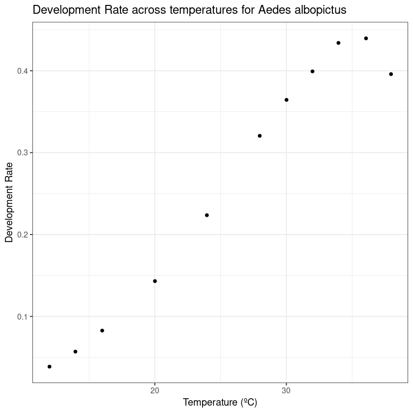
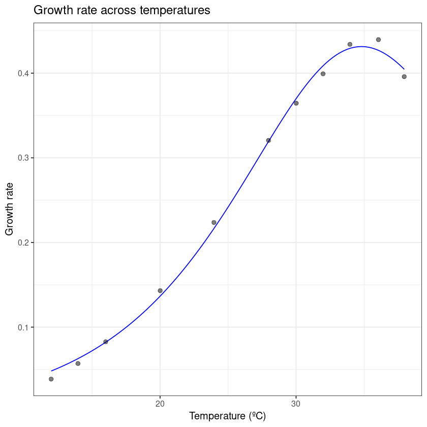
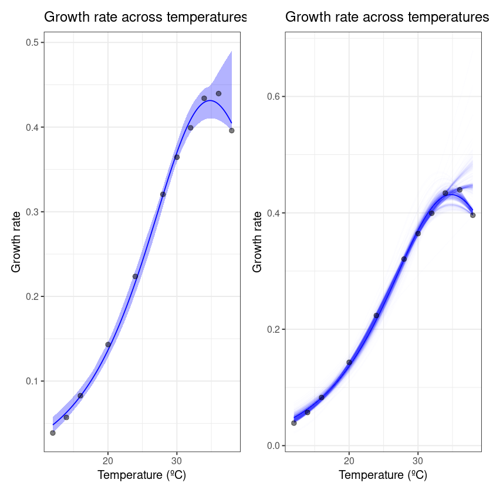

require('ggplot2')
require('nls.multstart')
require('broom')
require('tidyverse')
require('rTPC')
require('dplyr')
require('data.table')
require('car')
require('boot')
require('patchwork')
require('minpack.lm')
require("tidyr")
require('purrr')
# update.packages(ask = FALSE)
rm(list=ls())
graphics.off()
setwd("/home/primuser/Documents/VByte/VecMismatchPaper1/code/")
Loading required package: ggplot2
Loading required package: nls.multstart
Loading required package: broom
Loading required package: tidyverse
── Attaching packages ─────────────────────────────────────── tidyverse 1.3.0 ──
✔ tibble 3.1.0 ✔ dplyr 1.0.5
✔ tidyr 1.1.3 ✔ stringr 1.4.0
✔ readr 1.4.0 ✔ forcats 0.5.1
✔ purrr 0.3.4
── Conflicts ────────────────────────────────────────── tidyverse_conflicts() ──
✖ dplyr::filter() masks stats::filter()
✖ dplyr::lag() masks stats::lag()
Loading required package: rTPC
Loading required package: data.table
Attaching package: ‘data.table’
The following objects are masked from ‘package:dplyr’:
between, first, last
The following object is masked from ‘package:purrr’:
transpose
Loading required package: car
Loading required package: carData
Attaching package: ‘car’
The following object is masked from ‘package:dplyr’:
recode
The following object is masked from ‘package:purrr’:
some
Loading required package: boot
Attaching package: ‘boot’
The following object is masked from ‘package:car’:
logit
Loading required package: patchwork
Loading required package: minpack.lm
#take a look at the different models available
get_model_names()
- 'beta_2012'
- 'boatman_2017'
- 'briere2_1999'
- 'delong_2017'
- 'flinn_1991'
- 'gaussian_1987'
- 'hinshelwood_1947'
- 'joehnk_2008'
- 'johnsonlewin_1946'
- 'kamykowski_1985'
- 'lactin2_1995'
- 'modifiedgaussian_2006'
- 'oneill_1972'
- 'pawar_2018'
- 'quadratic_2008'
- 'ratkowsky_1983'
- 'rezende_2019'
- 'sharpeschoolfull_1981'
- 'sharpeschoolhigh_1981'
- 'sharpeschoollow_1981'
- 'spain_1982'
- 'thomas_2012'
- 'thomas_2017'
- 'weibull_1995'
#read in the trait data
final_trait_data <- read.csv('../data/Final_Traitofinterest.csv')
#filter out sets that less than the required parameters for schoolfield-high ()
final_trait_data <- dplyr::filter(final_trait_data,
originaltraitname != 'Adult survival' &
originalid != 'MSS0059' &
originaltraitname != 'Adult longevity (female, bloodfed)' &
originaltraitname != 'Adult longevity (male)' &
originaltraitname != 'Adult survival (female, bloodfed)' &
originaltraitname != 'Adult survival (male)' )
#remove completely irrelevant columns
df <- final_trait_data[,colSums(is.na(final_trait_data))<nrow(final_trait_data)]
#filter to single species and trait
df2 <- dplyr::filter(df, originalid == 'csm7I')
df1 <- df %>%
select('originalid', 'originaltraitname', 'originaltraitunit', 'originaltraitvalue', 'interactor1', 'ambienttemp')
#visualize
ggplot(df2, aes(ambienttemp, originaltraitvalue))+
geom_point()+
theme_bw(base_size = 12) +
labs(x = 'Temperature (ºC)',
y = 'Development Rate',
title = 'Development Rate across temperatures for Aedes albopictus')

#filter to single species and trait
df2 <- dplyr::filter(df, originalid == 'csm7I')
df1 <- df %>%
dplyr::select('originalid', 'originaltraitname', 'originaltraitunit', 'originaltraitvalue', 'interactor1', 'ambienttemp')
#filter to single species and trait
df2 <- dplyr::filter(df1, originalid == 'csm7I')
#visualize
ggplot(df2, aes(ambienttemp, originaltraitvalue))+
geom_point()+
theme_bw(base_size = 12) +
labs(x = 'Temperature (ºC)',
y = 'Development Rate',
title = 'Development Rate across temperatures for Aedes albopictus')

# choose model
mod = 'sharpschoolhigh_1981'
#mutate the titles because I am lazy and I don't want to change the formula
d<- df2 %>%
rename(temp = ambienttemp,
rate = originaltraitvalue)
# fit Sharpe-Schoolfield model
d_fit <- nest(d, data = c(temp, rate)) %>%
mutate(sharpeschoolhigh = map(data, ~nls_multstart(rate~sharpeschoolhigh_1981(temp = temp, r_tref,e,eh,th, tref = 15),
data = .x,
iter = c(3,3,3,3),
start_lower = get_start_vals(.x$temp, .x$rate, model_name = 'sharpeschoolhigh_1981') - 10,
start_upper = get_start_vals(.x$temp, .x$rate, model_name = 'sharpeschoolhigh_1981') + 10,
lower = get_lower_lims(.x$temp, .x$rate, model_name = 'sharpeschoolhigh_1981'),
upper = get_upper_lims(.x$temp, .x$rate, model_name = 'sharpeschoolhigh_1981'),
supp_errors = 'Y',
convergence_count = FALSE)),
# create new temperature data
new_data = map(data, ~tibble(temp = seq(min(.x$temp), max(.x$temp), length.out = 100))),
# predict over that data,
preds = map2(sharpeschoolhigh, new_data, ~augment(.x, newdata = .y)))
# unnest predictions
d_preds <- select(d_fit, preds) %>%
unnest(preds)
# plot data and predictions
ggplot() +
geom_line(aes(temp, .fitted), d_preds, col = 'blue') +
geom_point(aes(temp, rate), d, size = 2, alpha = 0.5) +
theme_bw(base_size = 12) +
labs(x = 'Temperature (ºC)',
y = 'Growth rate',
title = 'Growth rate across temperatures')

# refit model using nlsLM
fit_nlsLM <- minpack.lm::nlsLM(rate~sharpeschoolhigh_1981(temp = temp, r_tref,e,eh,th, tref = 15),
data = d,
start = coef(d_fit$sharpeschoolhigh[[1]]),
lower = get_lower_lims(d$temp, d$rate, model_name = 'sharpeschoolhigh_1981'),
upper = get_upper_lims(d$temp, d$rate, model_name = 'sharpeschoolhigh_1981'),
weights = rep(1, times = nrow(d)))
# bootstrap using case resampling
boot1 <- Boot(fit_nlsLM, method = 'case')
Warning message in nls.lm(par = start, fn = FCT, jac = jac, control = control, lower = lower, :
“lmdif: info = -1. Number of iterations has reached `maxiter' == 50.
”
# look at the data
head(boot1$t)
| r_tref | e | eh | th |
|---|---|---|---|
| 0.07063864 | 1.0053869 | 1.874912 | 33.91542 |
| 0.07548087 | 1.2405693 | 1.354708 | 27.80530 |
| 0.05795250 | 0.9512028 | 2.581735 | 36.71503 |
| 0.07072640 | 0.9470250 | 2.057355 | 35.26580 |
| 0.07085801 | 0.9233004 | 2.076732 | 35.80000 |
| 0.07037920 | 1.0263850 | 1.759150 | 33.38711 |
hist(boot1, layout = c(2,2))
Warning message in norm.inter(t, adj.alpha):
“extreme order statistics used as endpoints”
Warning message in norm.inter(t, adj.alpha):
“extreme order statistics used as endpoints”
# create predictions of each bootstrapped model
boot1_preds <- boot1$t %>%
as.data.frame() %>%
drop_na() %>%
mutate(iter = 1:n()) %>%
group_by_all() %>%
do(data.frame(temp = seq(min(d$temp), max(d$temp), length.out = 100))) %>%
ungroup() %>%
mutate(pred = sharpeschoolhigh_1981(temp, r_tref, e, eh, th, tref = 15))
# calculate bootstrapped confidence intervals
boot1_conf_preds <- group_by(boot1_preds, temp) %>%
summarise(conf_lower = quantile(pred, 0.025),
conf_upper = quantile(pred, 0.975)) %>%
ungroup()
# plot bootstrapped CIs
p1 <- ggplot() +
geom_line(aes(temp, .fitted), d_preds, col = 'blue') +
geom_ribbon(aes(temp, ymin = conf_lower, ymax = conf_upper), boot1_conf_preds, fill = 'blue', alpha = 0.3) +
geom_point(aes(temp, rate), d, size = 2, alpha = 0.5) +
theme_bw(base_size = 12) +
labs(x = 'Temperature (ºC)',
y = 'Growth rate',
title = 'Growth rate across temperatures')
# plot bootstrapped predictions
p2 <- ggplot() +
geom_line(aes(temp, .fitted), d_preds, col = 'blue') +
geom_line(aes(temp, pred, group = iter), boot1_preds, col = 'blue', alpha = 0.007) +
geom_point(aes(temp, rate), d, size = 2, alpha = 0.5) +
theme_bw(base_size = 12) +
labs(x = 'Temperature (ºC)',
y = 'Growth rate',
title = 'Growth rate across temperatures')
p1 + p2
